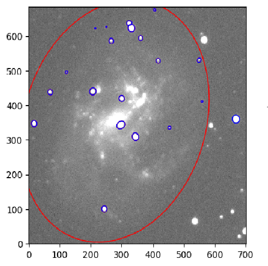
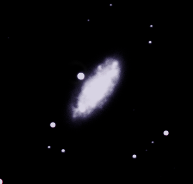
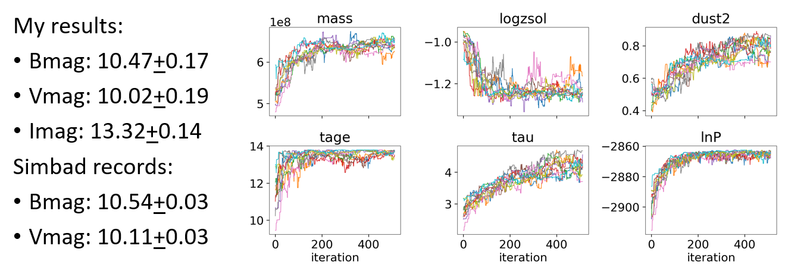
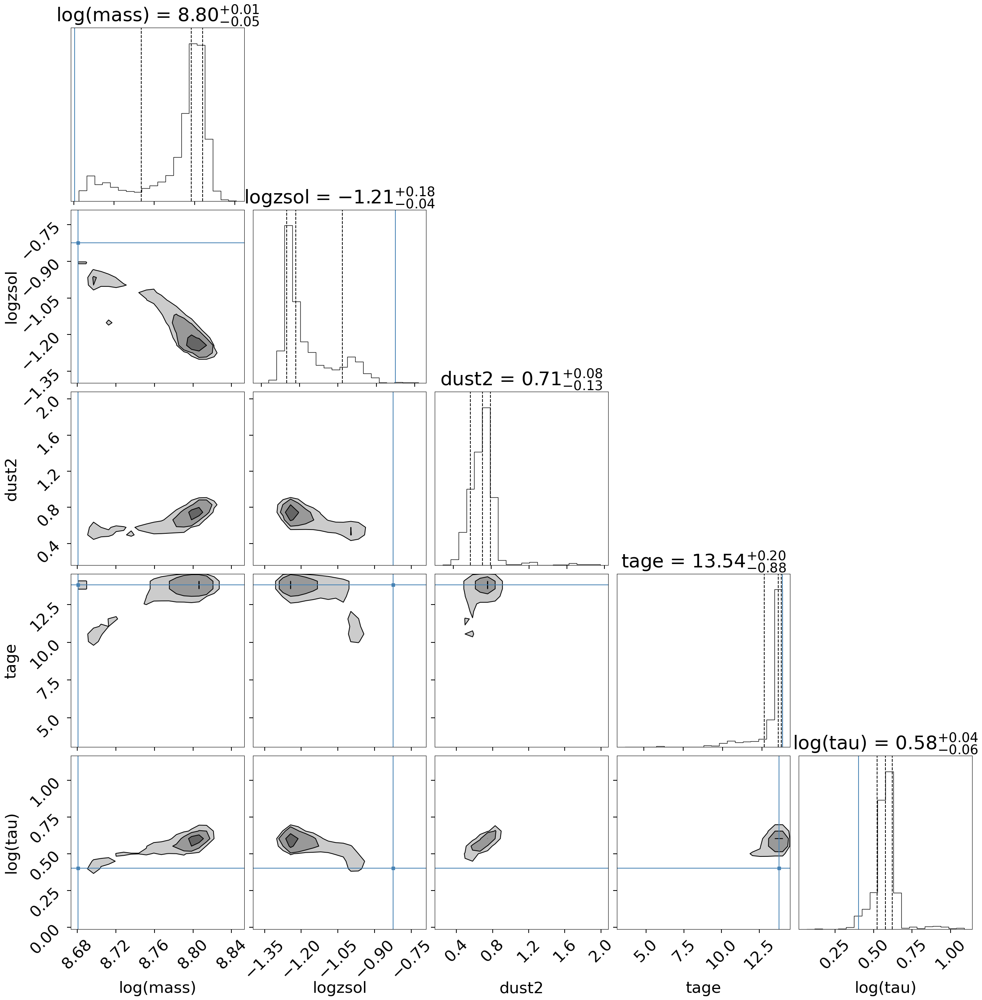
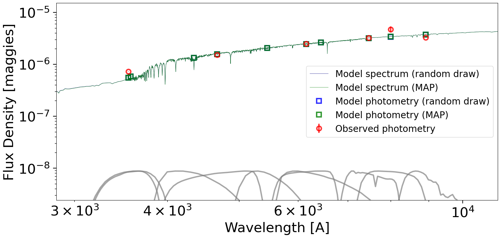
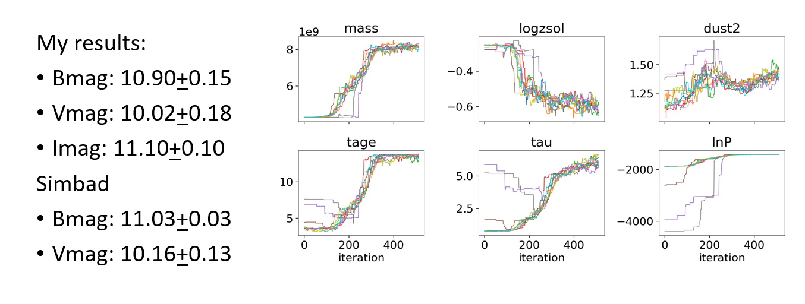
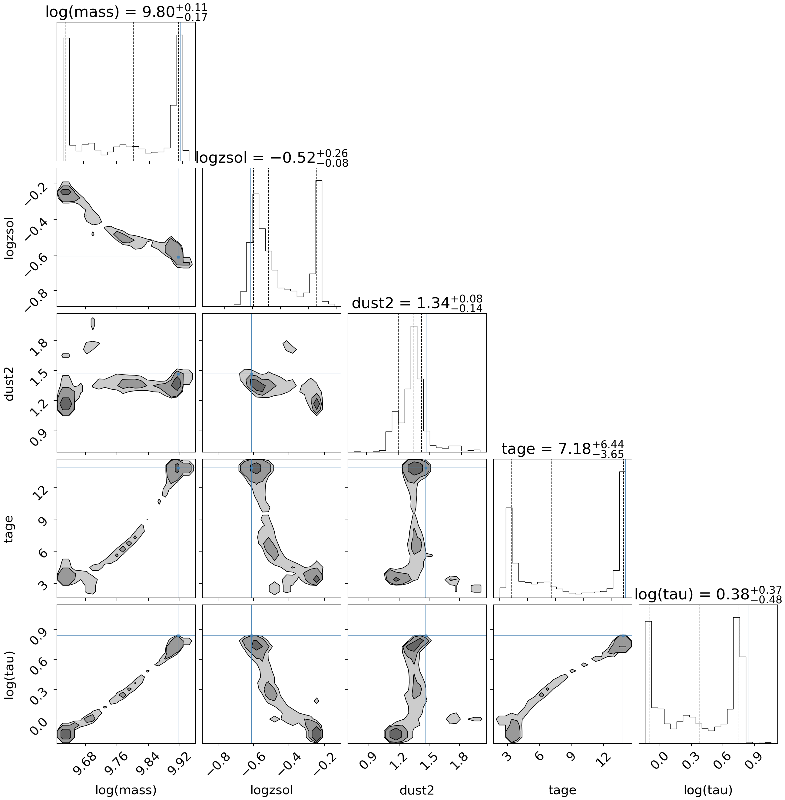
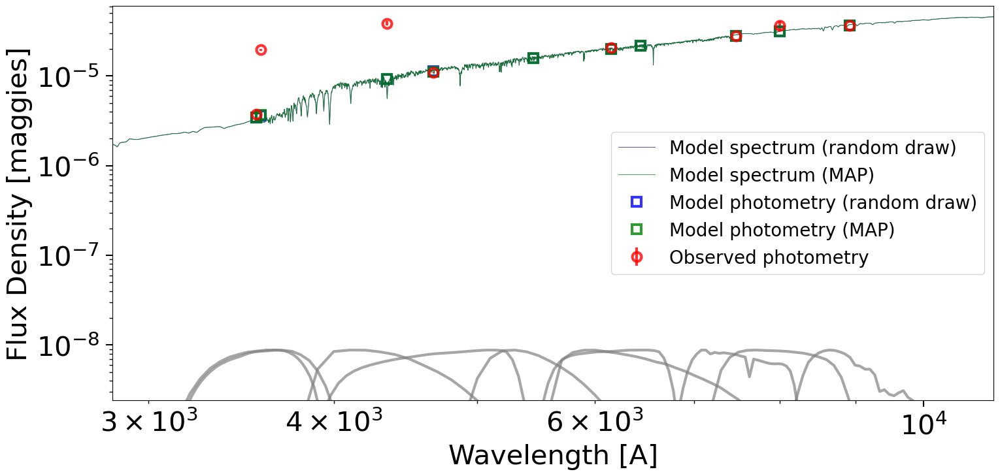
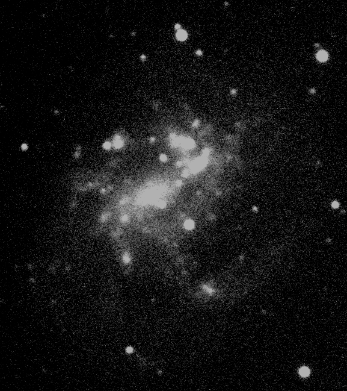

All images here were both taken and refined my me
Non-color composite of NGC 4395 in the B bandpass.
Originally envisioned as an attempt to understand trends in the different qualities of blue compact dwarf galaxies, limitations of scope and means quickly became apparent as time went on. As did the lack of an overaching initial question. It would have certainly been possible to find various qualities of galaxies and find means and deviations for them, but doing so wouldn't answer any ovarching question, rather just being an extraneous exercise in low level statistics.
What I came away from McDonald observatory with was a collection of images within B, V, and I Johnson-Cousins' filters and an H-alpha filter for two reasonably nearby dwarf galaxies, NGC 2976 and NGC 4395. Located approximately 3.5 and 4.4Mpc away, respectively, these two very distinct galaxies presented an opportunity to test the amount of information that could be gathered using what information I had and what I could mine from catalogues. Though not ideal subjects nor an ideal project to answer a particular research question, it was a deeply productive endeavor that ended up equipping me with a new suite of tools that going forward will continue to be refined and notably don't necessarily require additional telescope resources to carry out. Further, though it may not have yielded particularly high quality SED models, it did indeed produce them.
Data collection consisted of two methods. The first taking three images of each galaxy with exposure times of three minutes for each of the four filters, with this process being aided by my professor Dr. Hartigan of Rice University. This data was then reduced using IRAF and several of its packages including zerocombine, flatcombine, ccdproc, imalign, and imcombine. This resulted in a set of four images available for further analysis. A major issue that came up in this phase was signal to noise, with NGC 4395 being a low surface brightness galaxy, by definition dimmer than the sky background. This led to it being the most difficult to produce high quality images of, something that can be observed in the remaining noise visible in some of the images seen here, but the results were nonetheless spectacular to look at and analyze. The second method of data collection was far less exciting, though no less important due to the small number of data points I had available, which was using the Gaia and Vizier catalogues to find stars with good quality magnitude information and to find magnitudes of my targets in filters that I hadn't collected.
In-progress screenshot of identifying and accounting for the flux of Milky Way stars on the face of NGC 4395
Once reduced, the imaging data was then transferred to Python due to difficulties experienced while using IRAF's photcal package. In this environment, SEP was used to identify objects, including a number of stars within our galaxy that happen to occupy the plane of NGC 4395, then these objects were passed to the photutils and astropy library to calculate flux ratios and ultimately find the apparent magnitudes of the galaxies. From here the difficulty curve of the analysis increased greatly, as it was necessarily to learn at least some of the Fortran programming language and manage several wrappers and environments to operate a program known as FSPS. The primary use and reason for the name FSPS is flexible stellar population synthesis, wherein inputted data is synthesized into a modelled population. This synthesized model could then be analyzed for the quality of fit to the inputted data.
Initial fits with this process, unless exceedingly lucky, are not likely to produce good fits and thus potentially meaningful results, however. This necessitates iteration and tweaking of the models. This role was mediated by another package named astro-Prospector, which iteratively compared the fits of the models, then used both the dynesty and emcee packages to adjust model perameters each time. Of these two, emcee with its Monte Carlo approach consistently performed better than the former, but it would be remiss to not acknowledge that both were used. A particular challenge faced here and the reason for acquiring catalogue data for both targets was that in doing this, three data points, plus the known value of the galaxies' redshifts, were being used to attempt to fit upwards of five terms. Indeed, as the effort matured, six terms were reduced to four.
Colored B, V, and I composite of NGC 2976, with bandpasses fitted to blue, green, and red, respectively.
Results for neither galaxy were ideal, though at least for NGC 4395 the results do suggest that the effort did bring me closer to being able to meaningfully analyze galaxies using photometric data. Though wide in error range, my calculated magnitudes did agree with literature values and Prospector was able to tease FSPS towards converging on a particular, most probable model. Below you can see the particulars of these findings.
Magnitude and emcee regression results for NGC 4395
Emcee featured 512 separate simulations, which were all calculated separately. Though a higher number could well have been chosen for, diminishing returns and calculation time conspired for this to not be a route that was taken, with each frame requiring between 38 minutes and an hour and a half to calculate. Once calculated, a histogram was taken and formed into a corner plot shown below together with the operations' best fitted SED model. For the former, the top of each column features a mean value, representing a most likely quantity for a given parameter based on the individual magnitudes and their ratios. The units for the y axis of the latter are in maggies, found by dividing the flux received by the flux of a zero AB magnitude object within the same filter.
Corner plot for NGC 4395. Mass and dust agree reasonably well with literature values.
Fitted spectrum for NGC 4395
While no value for NGC 4395 matches literature values within even a 25% margin aside from mass, which is in solar mass units, they do all agree in being in the appropriate range with respect to comparisons made to the Milky Way and NGC 2976. Exactly what to make of this isn't clear at this time, though I believe it's primarily a product of attempting to make conclusions that are very sensitive to small perturbations based on a very small data set. With more data, I would expect these to improve and converge with literature values, though another factor may be the limitations of using this software on unusual galaxies such as a low surface brightness Seyfert without a bulge and numerous bright HII regions visible in the H-alpha data I acquired, but have yet to be able to feed into these models.
Magnitudes and emcee regression for NGC 2976.
While NGC 4395 was something that could inspire a measure of hope for the method, though not the most spectacular result, NGC 2976 was somewhat less inspiriong. The values for magnitude were again found to be in agreement, though quite rough, but every suggested value for the parameters examined in NGC 4395 was strongly bimodal. Initially this was thought to possibly be due to starburst activity, evidenced by a bright bar-like structure visible in the H-alpha filter of the galaxy, producing two distinct stellar populations. Upon reflection, however, it was concluded that this wasn't a quality the model should have been able to detect given that the entire galaxy was being treated as a single pixel. Further, the final SED that was synthesized was poorly fit in the blue, which despite the oddly young age the model claims on order of seven billion years, was lower than observations. Exactly why this might be the case is presently beyond me, though it's suspected that this lack of blue fitting and the strange values produced by of the model are interrelated.
Corner plot for NGC 2976.
Fitted spectrum for NGC 2976. Notably not well fitted in blue end of spectrum.
Overall this project was a success, insofar as it was an opportunity taken to expand a knowledgebase and set of skills that will continue to prove useful in the future. It was not a success in producing accurate models of these galaxies, but now freed from time constraints and a desire to treat both NGC 2976 and 4395 the same for the sake of the project, numerous data sources are now available to feed into these software packages to continue tuning and expanding upon the gains that were made. Of particular interest is exploring the numerous HII regions in NGC 4395, remarkably active despite the general disposition of dwarves to be gas poor and composed of old stellar populations. Additionally, it may be possible to compare these results with other approximation methods such as the Kennicutt-Schmidt law. My thanks to the Rice University Physics & Astronomy department as well as Dr. Hartigan and the TA's that assisted me getting through ASTR 230.
H-alpha filter image of NGC 4395. Note the numerous bright HII regions.